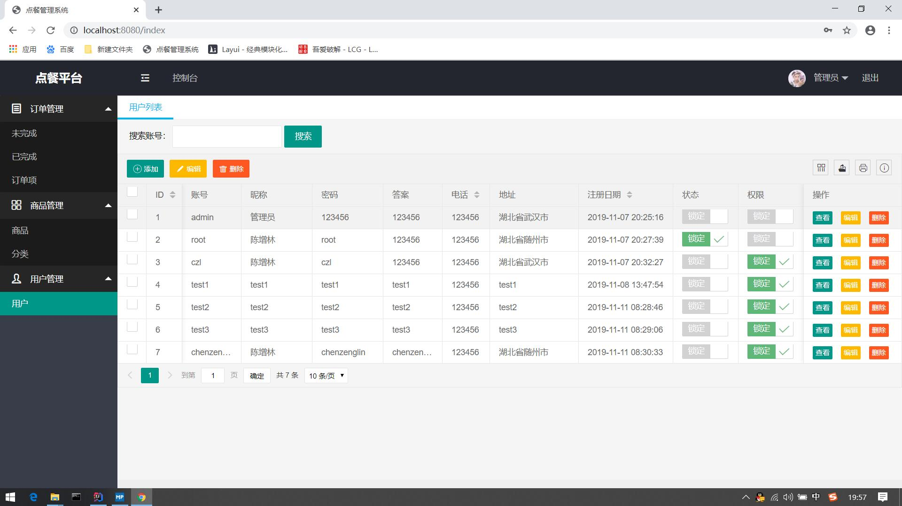

实习的时候，自己慢慢摸索使用Layui，刚开始看到这个框架就头疼，到现在只是了解了一部分，框架虽然精美，对于初学者来说没那么容易，经过两个星期的折腾，终于弄得像样了

页面
<html lang="zh-CN" xmlns:th="http://www.thymeleaf.org">
<head>
<meta charset="UTF-8">
<meta name="renderer" content="webkit">
<meta http-equiv="X-UA-Compatible" content="IE=edge,chrome=1">
<meta name="viewport" content="width=device-width, initial-scale=1, maximum-scale=1">
<title>用户</title>
<link rel="stylesheet" th:href="@{/layui/css/layui.css}">
</head>
<!--
..............
..............
..............
-->
<table class="layui-hide" id="test" lay-filter="test"></table>
<!--
..............
..............
..............
-->
<script th:src="@{/layui/layui.js}" type="text/javascript" charset="utf-8"></script>
<script th:inline="none">
layui.use(['table','util'],function () {
var index = layer.load(0, {shade: false}); //0代表加载的风格，支持0-2
var table = layui.table;
table.render({
elem: '#test'
, url: '/user/getUsers'
, toolbar: '#toolbarDemo'
, cellMinWidth: 80
, cellMinHeight: 500
, limits: [10, 20, 50]
, limit: 10
, method: 'post'
, defaultToolbar: ['filter', 'exports', 'print', {
title: '提示'
, layEvent: 'LAYTABLE_TIPS'
, icon: 'layui-icon-tips'
}]
, title: '用户数据表'
, cols: [
[
{type: 'checkbox', fixed: 'true'}
, {field: 'uid', title: 'ID', width: 60, sort: true, fixed: true}
, {field: 'username', title: '账号',width:100}
, {field: 'nickname', title: '昵称', width: 120}
, {field: 'password', title: '密码',width: 120}
, {field: 'answer', title: '答案', width:100}
, {field: 'phone', title: '电话', width: 80, sort: true}
, {field: 'address', title: '地址', width: 150}
, {field: 'registerDate', title: '注册日期', sort: true,width:160,templet:function(d){return layui.util.toDateString(d.registerDate,'yyyy-MM-dd HH:mm:ss');}}
, {field: 'status', title: '状态', templet: '#lockStatus',width:110, unresize: true}
, {field: 'permission', title: '权限', templet: '#lockPermission',width:110, unresize: true}
, {fixed: 'right', title: '操作', toolbar: '#barDemo'}
]
]
, id: 'testReload'
, page: true
, done: function (res, curr, count) {
layer.closeAll('loading');
}
});
});
</script>
Controller
@RestController
@RequestMapping("/user")
public class UserController {
@Autowired
UserService service;
@RequestMapping("/getUsers")
public Object getUsers(@RequestParam(defaultValue = "1") int page, @RequestParam(defaultValue = "10")int limit,HttpSession session){
Map<String,Object> map = new HashMap<>();
if (session.getAttribute("user")!=null){
User user = (User)session.getAttribute("user");
if (user.getPermission().equals("1")){
try {
PageInfo<User> pageInfo= service.getUsers(page,limit);
map.put("data", pageInfo.getList());
map.put("code", 0);
map.put("msg", "请求成功");
map.put("count", pageInfo.getTotal());
}catch (Exception e){
map.put("code","404");
map.put("msg","保存失败");
map.put("close","false");
}
return map;
}else {
map.put("msg","forbidden");
map.put("code","403");
map.put("error","无权限");
}
}else {
map.put("msg","forbidden");
map.put("code","404");
map.put("error","请求错误");
}
return map;
}
}
Service的实现类
@Service
public class UserServiceImpl implements UserService {
@Autowired
UserMapper mapper;
/**
* 查询所有用户并且分页
* @param page
* @param limit
* @return
*/
@Transactional(propagation = Propagation.REQUIRED, readOnly = true)
@Override
public PageInfo<User> getUsers(int page,int limit) {
PageHelper.startPage(page, limit);
List<User> users = mapper.getUsers();
PageInfo<User> pageInfo = new PageInfo<>(users);
return pageInfo;
}
}
service 接口
public interface UserService {
PageInfo<User> getUsers(int page,int limit);
}
Mapper 接口
主要用Mybatis注解查询
@Repository
@Mapper
public interface UserMapper {
@Select("select * from user")
List<User> getUsers();
}
pom.xml
<?xml version="1.0" encoding="UTF-8"?>
<project xmlns="http://maven.apache.org/POM/4.0.0" xmlns:xsi="http://www.w3.org/2001/XMLSchema-instance"
xsi:schemaLocation="http://maven.apache.org/POM/4.0.0 https://maven.apache.org/xsd/maven-4.0.0.xsd">
<modelVersion>4.0.0</modelVersion>
<parent>
<groupId>org.springframework.boot</groupId>
<artifactId>spring-boot-starter-parent</artifactId>
<version>2.2.0.RELEASE</version>
<relativePath/> <!-- lookup parent from repository -->
</parent>
<groupId>com.czl</groupId>
<artifactId>spring-boot-order-food</artifactId>
<version>0.0.1-SNAPSHOT</version>
<name>demo</name>
<description>Demo project for Spring Boot</description>
<properties>
<java.version>1.8</java.version>
<project.build.sourceEncoding>UTF-8</project.build.sourceEncoding>
<project.reporting.outputEncoding>UTF-8</project.reporting.outputEncoding>
<thymeleaf.version>3.0.11.RELEASE</thymeleaf.version>
<thymeleaf-layout-dialect.version>2.1.1</thymeleaf-layout-dialect.version>
</properties>
<dependencies>
<dependency>
<groupId>org.springframework.boot</groupId>
<artifactId>spring-boot-starter-thymeleaf</artifactId>
</dependency>
<dependency>
<groupId>org.springframework.boot</groupId>
<artifactId>spring-boot-starter-web</artifactId>
</dependency>
<dependency>
<groupId>org.mybatis.spring.boot</groupId>
<artifactId>mybatis-spring-boot-starter</artifactId>
<version>2.1.1</version>
</dependency>
<dependency>
<groupId>com.github.pagehelper</groupId>
<artifactId>pagehelper</artifactId>
<version>5.1.10</version>
</dependency>
<dependency>
<groupId>com.github.pagehelper</groupId>
<artifactId>pagehelper-spring-boot-autoconfigure</artifactId>
<version>1.2.3</version>
</dependency>
<dependency>
<groupId>com.github.pagehelper</groupId>
<artifactId>pagehelper-spring-boot-starter</artifactId>
<version>1.2.3</version>
</dependency>
<dependency>
<groupId>org.springframework.boot</groupId>
<artifactId>spring-boot-devtools</artifactId>
<scope>runtime</scope>
<optional>true</optional>
</dependency>
<dependency>
<groupId>mysql</groupId>
<artifactId>mysql-connector-java</artifactId>
<scope>runtime</scope>
</dependency>
<dependency>
<groupId>org.springframework.boot</groupId>
<artifactId>spring-boot-configuration-processor</artifactId>
<optional>true</optional>
</dependency>
<dependency>
<groupId>org.projectlombok</groupId>
<artifactId>lombok</artifactId>
<optional>true</optional>
</dependency>
<dependency>
<groupId>org.springframework.boot</groupId>
<artifactId>spring-boot-starter-test</artifactId>
<scope>test</scope>
<exclusions>
<exclusion>
<groupId>org.junit.vintage</groupId>
<artifactId>junit-vintage-engine</artifactId>
</exclusion>
</exclusions>
</dependency>
<!-- https://mvnrepository.com/artifact/com.alibaba/fastjson -->
<dependency>
<groupId>com.alibaba</groupId>
<artifactId>fastjson</artifactId>
<version>1.2.62</version>
</dependency>
<!-- https://mvnrepository.com/artifact/com.xfvape.uid/uid-generator -->
<dependency>
<groupId>com.xfvape.uid</groupId>
<artifactId>uid-generator</artifactId>
<version>0.0.4-RELEASE</version>
</dependency>
</dependencies>
<!-- Maven仓库地址 (下载源) -->
<repositories>
<repository>
<id>central-repos</id>
<name>Central Repository</name>
<url>http://maven.aliyun.com/nexus/content/groups/public/</url>
<releases>
<enabled>true</enabled>
</releases>
<snapshots>
<enabled>false</enabled>
</snapshots>
</repository>
</repositories>
<build>
<plugins>
<plugin>
<groupId>org.springframework.boot</groupId>
<artifactId>spring-boot-maven-plugin</artifactId>
</plugin>
</plugins>
</build>
</project>
好了，就这样吧，有问题评论一下！